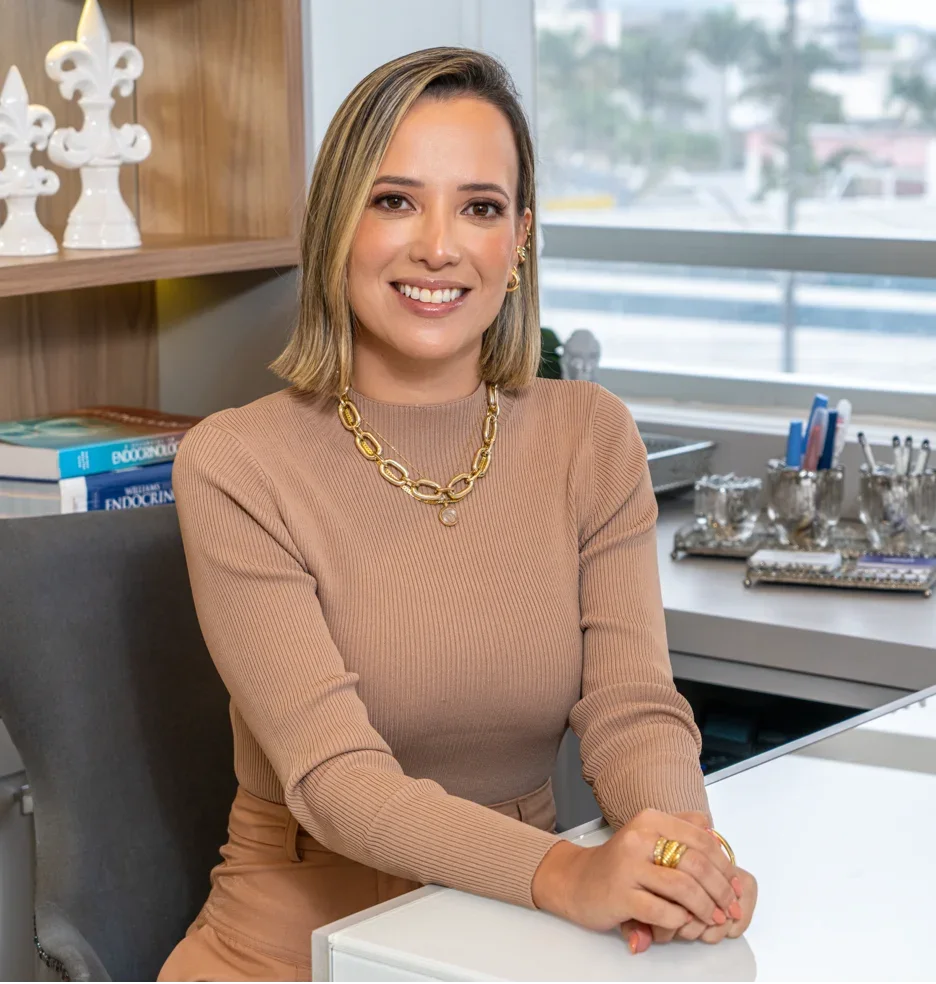

A avaliação considera os exames, o histórico e a rotina para orientar o acompanhamento da glicose e do diabetes de forma individualizada.
ENDOCRINOLOGIA E METABOLOGIA
Cuidar da sua saúde começa por entender você.
Um olhar atento à sua história, aos seus hormônios e à sua qualidade de vida. Conheça a Dra. Renata Fortunato.
Agendar minha consultaTubarão, SCPresencial e online
CRM-SC 18988 · RQE 17353
Um cuidado que considera você por inteiro.Conheça o atendimento
SAÚDE HORMONAL E METABÓLICA
Cada sinal merece um olhar atento.
Os hormônios participam de diferentes funções do organismo. A endocrinologia ajuda a investigar alterações e a definir o cuidado adequado para cada pessoa.
Conheça algumas das áreas acompanhadas pela especialidade.
Como funciona a consultaAlterações na função da tireoide e nódulos precisam de uma avaliação que reúna sintomas, exame clínico e resultados dos exames.
O cuidado com o peso envolve diferentes fatores. A consulta permite compreender o contexto e discutir possibilidades de tratamento, quando indicado.
Os resultados dos exames são avaliados em conjunto com a história de saúde e os demais fatores de risco, para orientar o acompanhamento.
A endocrinologia também acompanha o metabolismo ósseo, incluindo a avaliação da osteoporose e dos fatores associados à fragilidade dos ossos.
O SEU ATENDIMENTO
A sua história é o
ponto de partida.
Da primeira conversa ao acompanhamento, o cuidado começa com espaço para ouvir e compreender.
- 01
Primeiro contato
Escolha entre consulta presencial ou online e consulte a disponibilidade.
- 02
Escuta e avaliação
Converse sobre suas queixas, sua rotina e seu histórico de saúde.
- 03
Cuidado individual
Entenda as orientações e os próximos passos a partir da avaliação médica.
- 04
Acompanhamento
Retome suas dúvidas e avalie a evolução conforme a necessidade do seu caso.

CONHEÇA SUA MÉDICA
Dra. Renata Fortunato
Endocrinologia e Metabologia
CRM-SC 18988 · RQE 17353
Medicina com atenção à pessoa, à sua história e à vida que acontece fora do consultório.
Sou formada em Medicina pela Unisul, com residência em Clínica Médica no Hospital Nossa Senhora da Conceição e em Endocrinologia e Metabologia no IEDE, no Rio de Janeiro.
Acredito em um cuidado construído em conjunto. Entender a rotina e acolher as dúvidas de cada paciente faz parte do caminho para definir uma orientação individualizada.
A docência na Unisul e a atualização profissional também fazem parte da minha trajetória.
Vamos conversar?FORMAÇÃO E TRAJETÓRIA
Conhecimento que
sustenta o cuidado.
- Especialização
- Residência em Endocrinologia e Metabologia no IEDEInstituto Estadual de Diabetes e Endocrinologia Luiz Capriglione · RQE 17353
- Base clínica
- Residência em Clínica Médica no HNSCHospital Nossa Senhora da Conceição, Tubarão · RQE 13747
- Formação acadêmica
- Medicina pela Unisul e pós-graduação pela PUC-RioPós-graduação em Endocrinologia e Metabologia
- Ensino e sociedades
- Professora na Unisul, membro da SBEM e da ABRASSOSociedade Brasileira de Endocrinologia e Metabologia · Associação Brasileira de Avaliação Óssea e Osteometabolismo
PERTO DE VOCÊ
O cuidado também se adapta
à sua rotina.
Consulta presencial
Atendimento em Tubarão, SC. Entre em contato para escolher um horário e receber as orientações.
Agendar em TubarãoConsulta online
Converse com a Dra. Renata à distância. Acesse a agenda para consultar as opções disponíveis.
Acessar agenda onlinePALAVRAS DE QUEM JÁ CONHECE
Cuidado que se traduz
em confiança.
“Teu conteúdo sendo um conteúdo claro…”Ler relato na fonte
“Recomendo de olhos fechados… é um ser humano incrível…”Ler relato na fonte
“…todo o agradecimento é pouco…”Ler relato na fonte
Relatos publicados no site da Dra. Renata Fortunato.
1–2 de 3CONSULTÓRIO EM TUBARÃO
Um espaço para
cuidar de você.
Complexo Médico Provida
Av. Marcolino Martins Cabral, 2075
Vila Moema · Tubarão, SC
Confirme a sala e as orientações de chegada ao agendar.
Falar pelo WhatsAppANTES DA CONSULTA
Vamos esclarecer
suas dúvidas?
Encontre informações para organizar seu atendimento. Se precisar, fale diretamente pelo WhatsApp.
Tirar uma dúvidaUse o botão “Agendar consulta” para falar pelo WhatsApp. Para atendimento online, você também pode acessar a agenda na seção de modalidades.
Sim. Há opção de consulta online. Consulte os horários disponíveis e as orientações de acesso pela agenda ou pelo WhatsApp.
No Complexo Médico Provida, na Av. Marcolino Martins Cabral, 2075, em Tubarão. Confirme a sala no agendamento. O mapa e o link de rota estão na seção de localização.
Separe os exames que já possui, uma lista dos medicamentos em uso e suas principais dúvidas. As orientações específicas podem ser confirmadas no agendamento.
Entre em contato pelo WhatsApp para receber informações atualizadas sobre valores, formas de pagamento e disponibilidade.
O PRÓXIMO PASSO É SEU
Mais atenção à sua saúde.
Mais cuidado com você.
Agende uma consulta e converse sobre o que você precisa.